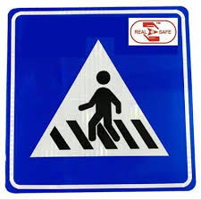

Types Of Road Traffic Signs And Their Relevance In India
We are all aware of the intensity of vehicular traffic in India and
its consequences, like traffic congestion and accidents. Traffic signs
have been installed to overcome problems like these. They are the
signs which are set up on the roads to give a heads-up to the
commuters, ensuring that there is smooth movement of vehicles and
pedestrians. Traffic signs are basically rules and regulations to be
followed by pedestrians, cyclists and motorists on the road. Following
traffic signs is as important as following traffic signals. Read on to
learn more about the types of road traffic signs in India.
Traffic signs are mainly split into three types, each with a different
shape emphasising different guidance. Here are more details.
1. Cautionary Signs
2. Informatory Signs
3. Mandatory Signs
Cautionary Signs
These signs are triangular in shape and predominantly red in colour.
There are about 40 cautionary signs, and they are mostly displaced in
places where utmost attention is needed to safeguard oneself and
others. Here are more details of the same.
NOTE: Hover on each sign to know the description.
The speed breaker caution sign is used to alert motorists and
other vehicles of a vertical steep deflection in the roadway
ahead.
A steep sign warns drivers of a significant incline or decline ahead, prompting them to adjust their speed and use caution while navigating the road.
A narrow road sign alerts drivers to a section of road where the width is reduced, requiring caution and possibly yielding to oncoming traffic.
A Y intersection sign indicates that the road ahead splits into two directions, forming a Y shape, and drivers must choose between the two available paths.
A circular traffic intersection sign warns drivers of a roundabout ahead, guiding them to navigate in a circular direction.
A sign depicting falling rocks warns drivers of potential rockfalls ahead, advising caution and readiness to encounter falling debris on the road.
To caution the drivers about the bridge ahead, which is narrow to the road prior to it
Major Road Ahead Sign: To notify the drivers that they are heading to a major road with a huge traffic flow.
Informatory Signs
These signs are rectangular in shape and mostly blue in colour. These
signs are very helpful to the drivers, as they might be in need of it.
These sign boards are erected to inform the commuters about the
upcoming destination, medical facilities, fuel station, and other
necessary information that the road user may need.
NOTE: Hover on each sign to know the description.
A sign with a phone symbol indicates a telephone is available within 1 km for public use.
A sign featuring a fork and knife symbol indicates the presence of a dining facility or restaurant within a distance of 500 meters ahead.
It's used to indicate the presence of a hospital or medical facility nearby, providing crucial information for drivers and pedestrians seeking medical assistance or directions.
A road sign featuring a fuel pump symbol informs drivers that a petrol station is available within a distance of 2 kilometers ahead on the route.

A road sign with a pedestrian crossing symbol indicates an area where pedestrians frequently cross the road, alerting drivers to be cautious and yield.
A sign with a white cross on a red background indicates the location of a first aid station or medical assistance nearby for emergencies.
A sign with a white arrow on a blue background indicates a one-way street or road ahead, directing traffic in a single direction.
A sign with a U-turn arrow indicates a designated area where drivers can legally make a U-turn, typically marked on the road for visibility.
Mandatory Signs
These signs are usually circular in shape and blue in colour. They
depict orders to be followed, no matter what. They have been installed
to let the people know that these signs cannot be ignored, and failure
to act accordingly may result in issues like severe penal action,
confinement and much more. Here are the different types of mandatory
traffic signs in India.
NOTE: Hover on each sign to know the description.
A no parking sign indicates that parking is prohibited in the designated area, helping to maintain traffic flow and ensure safety.
A no entry sign indicates that entry is prohibited for all vehicles in the designated area, ensuring safety and proper traffic direction.
A horn prohibited sign indicates that honking is not allowed in the designated area, promoting a quieter environment and reducing noise pollution.
A no overtaking sign indicates that overtaking other vehicles is prohibited in the designated area, ensuring safety and preventing accidents.
A "no stopping or standing" sign indicates that vehicles are not allowed to stop or stand in the designated area, ensuring clear traffic flow and safety compliance.
A speed limit sign of 30 km/h indicates the maximum allowable speed, promoting safety in residential or high-pedestrian areas.
A U-turn prohibited sign indicates that making a U-turn is not allowed in the designated area, promoting traffic safety and adherence to road regulations.
A "vehicle prohibited" sign indicates that entry or use of vehicles is not permitted in the designated area, typically for safety or environmental reasons.
Conclusion
Traffic signs are vital for maintaining safety and efficiency on roads, providing essential information and warnings to both drivers and pedestrians. They serve multiple functions, from guiding behavior to alerting road users about upcoming conditions and potential hazards. By understanding and adhering to these signs, road users can significantly reduce the risk of accidents and ensure smoother traffic flow.
These signs are designed to be universally understood, using symbols and colors that transcend language barriers. For example, warning signs typically use a triangular shape with a bold border, signaling drivers to exercise caution. Regulatory signs, on the other hand, use circular or rectangular shapes to provide instructions, such as speed limits or directional mandates.
The presence of traffic signs helps in managing complex traffic situations, like intersections and roundabouts, where clear guidance is essential to prevent confusion and collisions. Signs indicating changes in road conditions, such as narrowing roads or steep inclines, prepare drivers to adjust their speed and driving style accordingly. This preemptive information is crucial for maintaining control of the vehicle and ensuring the safety of all road users.
Moreover, traffic signs play a key role in emergency scenarios, guiding vehicles to medical facilities or alerting them to immediate hazards like falling rocks or slippery roads. These signs are strategically placed to give drivers ample time to react, thus preventing accidents and enabling timely responses to emergencies.
In conclusion, traffic signs are indispensable tools for road safety and efficient transportation. They provide clear, concise information that helps prevent accidents, manage traffic flow, and protect all road users. Understanding and following these signs is essential for maintaining order and safety on the roads. By paying attention to these signals, drivers and pedestrians alike contribute to a safer and more organized driving environment.